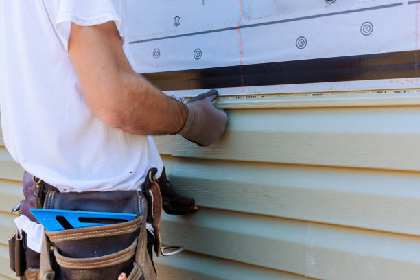

Grant Alabama
info@bestroofingandsiding.pro
Grant Alabama
info@bestroofingandsiding.pro

Enhance your home’s curb appeal with expert siding installation in Grant Alabama . Our experienced team delivers durable, energy-efficient, and visually appealing siding solutions for homes throughout Grant Alabama .
Click Here To Call Us (877) 848-1711When it comes to enhancing your home's curb appeal and protecting it from the elements, choosing the right siding is crucial. At , we offer premium siding installation, repair, and replacement services across Grant Alabama . Our experienced team is dedicated to delivering exceptional results that will not only increase the value of your home but also improve its energy efficiency.
We specialize in a wide variety of siding materials, including vinyl, fiber cement, wood, and aluminum, ensuring that your home gets the best protection while matching your aesthetic preferences. Whether you're looking for a durable, low-maintenance solution or a more eco-friendly option, we have the perfect siding for you.
Our siding services in Grant Alabama are designed to withstand harsh weather conditions, offering superior insulation and protection against wind, rain, and sun exposure. We understand the importance of energy efficiency, which is why we provide expert advice on choosing the best siding materials for insulation and reducing heating and cooling costs.
Why choose ? With years of experience in the siding industry, we pride ourselves on providing professional installation, timely service, and unmatched craftsmanship. Our team is fully licensed and insured, ensuring peace of mind for every project.
Contact us today for a free consultation and see how we can transform the exterior of your home in Grant Alabama !
Residential & commercial siding
Quality services at affordable prices
Immediate 24/ 7 emergency services


When choosing the right siding materials for your home in Grant Alabama it's crucial to consider the unique climate challenges of the area. Grant Alabama experiences a mix of high humidity, intense sun, and frequent storms, so selecting durable and weather-resistant siding is essential for long-lasting protection. Here are the top siding materials that stand up to these tough conditions:
Fiber Cement Siding: Fiber cement is one of the most durable and weather-resistant materials for Grant Alabama homes. It can withstand high heat, heavy rain, and humidity without warping or rotting. Plus, it requires minimal maintenance, making it ideal for homeowners looking for longevity and ease of care.
Vinyl Siding: Vinyl siding is a popular choice in Grant Alabama due to its ability to resist moisture and mold. It's a cost-effective option that provides good insulation, ensuring that your home stays energy-efficient despite the heat.
Metal Siding: For those seeking a sleek, modern aesthetic, metal siding is a great option. It's resistant to both rust and fading, which is important in a humid, sunny environment like Grant Alabama . Metal siding also provides superior protection against storm damage.
Wood Siding: If you prefer a natural look, treated wood siding can work well in Grant Alabama as long as it's properly sealed and maintained. Choose wood varieties resistant to moisture and pests for optimal performance in this tropical climate.
By choosing the right siding material, you can ensure that your home in Grant Alabama stays protected from the elements while maintaining its aesthetic appeal.
Residential & commercial siding
Quality services at affordable prices
Immediate 24/ 7 emergency services
Wood siding installation is a timeless choice that offers warmth and character to any home. If you're drawn to natural aesthetics, our wood siding installation services provide an exquisite option to highlight the unique charm of your property. Our skilled professionals expertly handle every aspect of the installation to ensure that you get an enduring, beautiful finish.
We focus on superior quality wood siding that can withstand the elements while adding energy efficiency to your home. Moreover, we offer various finishes and treatments that can enhance the appearance and longevity of your wood siding. Whether you're aiming for a rustic look or a more polished finish, we can help you achieve the perfect exterior visual that reflects your personal taste.

Siding maintenance services are essential for preserving the beauty and longevity of your home's exterior. Regular maintenance can prevent significant damage, saving you money on costly repairs and replacements. Our company offers comprehensive siding maintenance services tailored to your specific needs.
Our expert team can perform inspections, cleaning, and necessary repairs to ensure your siding remains in top condition. We are knowledgeable about all types of siding materials, ensuring that we can provide the right care for your particular siding type.
By choosing our siding maintenance services, you're investing in the longevity of your home’s exterior. We are committed to providing thorough and affordable maintenance in Grant Alabama helping you protect your investment for years to come.

Supporting local businesses is vital for community growth, and our local siding company is proud to serve our neighbors. We offer a wide range of siding services, combining quality workmanship with a deep understanding of the local environment and community needs.
Choosing our local company means you’ll receive personalized service and tailored solutions. Our friendly team is always available to address your questions and concerns, ensuring a seamless experience from start to finish.
We prioritize customer satisfaction and community engagement, setting us apart from larger corporations. Trust your local siding experts and contact us today for all your siding needs!

Are you looking to enhance your home’s environmental efficiency? Our eco-friendly siding installation services in Grant Alabama focus on using sustainable materials and practices that minimize your home’s environmental impact.
We offer a range of eco-friendly siding options that not only look great but are also designed to be energy-efficient and recyclable. Our team is dedicated to helping you make choices that benefit both your home and the planet. Choose us for a siding installation that prioritizes sustainability without compromising beauty and quality.

Aluminum siding is a durable and low-maintenance option for homeowners looking for an alternative to traditional siding materials. Our aluminum siding installation services in Grant Alabama ensure that you receive top-notch quality and aesthetics with minimal upkeep.
We are experts in aluminum siding, and our team is committed to installing it with precision and care, ensuring that it is not only functional but also enhances your home's curb appeal. With a variety of colors and styles available, aluminum siding can provide a modern and long-lasting solution for your home. Trust us to guide you through the selection and installation process, providing results that you will love.
How do you know you’re making the right choice with your siding contractor? Choosing siding contractors with warranties can provide you peace of mind. Our company proudly offers warranties that protect both our materials and labor, reinforcing our commitment to quality and customer satisfaction.
We believe in the durability of our products and workmanship, and we stand behind our services. With our warranties, you can have confidence that your investment is protected and that our team is dedicated to addressing any potential concerns that arise after installation. Experience service with assurance when you choose us for your siding needs.

Our siding installation and repair services provide a complete solution for homeowners looking to enhance or restore their property's exterior. Whether you're planning a new siding installation or need repairs for your existing siding, our team of skilled professionals is here to help.
We offer a wide range of siding materials and styles to meet your needs, ensuring that you find the perfect solution for your home. Our commitment to quality workmanship and attention to detail ensures that every installation and repair project is completed to your satisfaction.
Choosing our siding installation and repair services means choosing a reliable partner for your home's exterior needs. We strive to exceed your expectations with quality materials and exceptional customer service in Grant Alabama .

House siding installation services in Grant Alabama are crucial for achieving a beautiful and durable home exterior. Our company specializes in high-quality siding installation, providing a range of materials to suit every homeowner's style and budget.
We understand that the right siding can enhance your home's curb appeal while providing necessary protection from the elements. Our experienced team will guide you through your options, ensuring you make the best choice for your home.
When you choose our house siding installation services, you’re choosing quality, reliability, and a commitment to customer satisfaction. We take pride in providing top-notch service ensuring your home looks its best while staying protected for years to come.
Years Experience
Expert Technicians
Satisfied Clients
Compleate Projects
At Best Roofing and Siding, we understand the importance of quality siding for your home or business in Grant Alabama . As a trusted name in the industry, we combine unmatched expertise, premium materials, and exceptional customer service to deliver siding solutions tailored to your unique needs. Here's why we're the top choice for siding services across all cities in Grant Alabama .
Unparalleled Experience and Expertise
Our team of professionals has years of experience providing siding installations, repairs, and replacements in Grant Alabama . Whether you're enhancing your home's curb appeal or improving energy efficiency, we bring precision and skill to every project. We stay updated with the latest siding trends and technologies to ensure you get modern, durable solutions.
High-Quality Materials
We use only the best materials in the industry, offering a variety of siding options, including vinyl, fiber cement, wood, and more. Each product is sourced from reputable manufacturers to guarantee lasting performance and aesthetic appeal.
Customer-Centric Approach
At Best Roofing and Siding, customer satisfaction is our priority. From the initial consultation to project completion, we maintain clear communication, ensuring you’re informed every step of the way. Our friendly team listens to your needs and provides expert recommendations to suit your preferences and budget.
Comprehensive Service Coverage
Serving all cities in Grant Alabama we’re committed to delivering consistent quality, regardless of your location. Our reliable team ensures timely project completion with minimal disruptions.
Choose Best Roofing and Siding for siding services that enhance the beauty, value, and protection of your property in Grant Alabama . Contact us today for a free estimate!
When it comes to enhancing the exterior of your home or business, finding reliable siding contractors near you can orchestrate the perfect marriage between aesthetic appeal and protection against the elements. Our dedicated team of siding experts stands ready to consult, plan, and execute with precision. With years of experience in the industry, we understand the nuances of different siding materials, styles, and installation techniques. Choose us for our commitment to quality, customer satisfaction, and a comprehensive approach that considers your budget and design vision.
Our siding contractors take pride in offering a tailored service, ensuring that your needs and preferences take center stage. Not only do we provide impeccable craftsmanship, but we also value open communication to keep you informed throughout the process. With our team, you’ll experience timely project completion, minimal disruption, and beautiful results that elevate your property’s curb appeal.
Searching for the best siding companies near you? Look no further! Our extensive portfolio and positive testimonials from satisfied clients establish us as the top choice for siding installation and repair in Grant Alabama . We believe that our dedication to quality sets us apart. We utilize only the finest materials from reputable manufacturers, ensuring durability and long-lasting beauty for every project.
Our skilled professionals are equipped to handle a wide range of siding options, be it vinyl, fiber cement, wood, or aluminum. With our commitment to sustainable practices, we also offer eco-friendly siding solutions that provide energy efficiency without compromising on aesthetics. Our focus is not only on the installation but also on educating our clients about the best siding choices available, tailored to their specific needs and preferences.
Vinyl siding has become one of the most popular choices for homeowners due to its durability, aesthetic appeal, and low maintenance requirements. Our vinyl siding installation services are second to none, thanks to our experienced team and high-quality materials.
When you choose us for your vinyl siding installation, you can expect meticulous craftsmanship that guarantees a perfect fit and finish. Our vinyl siding is available in a variety of colors and textures, allowing you to customize the look of your home. Energy efficiency is also a key benefit of our vinyl siding; it can significantly reduce your heating and cooling costs, making your home more comfortable year-round.
Moreover, our company stands out by ensuring that all installations adhere to local building codes and regulations . We work closely with our clients to ensure their vision for their home becomes a reality. Choose us for your vinyl siding installation, and enjoy a combination of quality, beauty, and innovation!
Many homeowners believe that quality siding installation must come at a high price. However, our affordable siding installation services prove otherwise. We are committed to delivering high-quality siding solutions that fit within your budget without compromising on quality.
Our team understands the unique financial stresses that come with home renovations, which is why we offer flexible financing options to ensure accessibility for all. On top of that, we provide free estimates to help you understand the costs involved upfront. Our quality installations reduce the potential for future repairs and replacements, ultimately saving you money.
What sets us apart is our dedication to using superior materials at competitive prices, making us one of the most trusted names for affordable siding installation in Grant Alabama . Let us transform your home while keeping the budget intact!
Damage to your home’s siding can occur due to various factors, and timely siding repair services are vital. Our expert team offers comprehensive inspections to assess any damages ranging from severe weather wear and tear to pest infestations. We can restore your siding to its former glory with a swift, efficient approach.
We utilize high-quality repair materials and cutting-edge techniques to address issues such as cracks, holes, and faded sections. Understanding that siding repairs can often be urgent, our team prioritizes fast response times and effective repairs. We also advise on preventive maintenance measures that can extend the lifespan of your siding and save you from future repairs.
Your home is your sanctuary, and the siding you choose plays a vital role in its appearance and functionality. Our residential siding installation services are tailored to meet your specific needs and preferences. We offer a variety of styles, colors, and materials to ensure that your home reflects your unique taste.
Our professional team possesses the expertise to properly install any siding type, including vinyl, wood, or fiber cement. We focus on detail, ensuring your installation is completed to the highest standards. With our commitment to customer satisfaction and quality service, we aim to exceed your expectations at every turn.
A building's exterior speaks volumes about its business. For this reason, hiring the right commercial siding contractors is crucial. Our licensed and insured team offers commercial siding services designed to enhance the appearance and integrity of your business premises.
We work with various commercial building materials that will provide durability and aesthetic appeal tailored to your business's needs. We understand the importance of minimal disruption to your operations, which is why our professionals work efficiently to ensure that your project is completed on time and within budget. Trust us to elevate your commercial property’s exterior while ensuring quality craftsmanship and finishing.
Choosing local siding installers means you’re supporting your community and gaining access to trusted professionals who know the area well. Our team consists of highly skilled local installers who are dedicated to providing exceptional service tailored to the unique needs of your home and neighborhood.
We pride ourselves on our attention to detail and commitment to quality. Our local installers understand the local climate and its effects on siding materials, allowing them to give informed advice on the best options for your home. This local expertise, combined with our extensive product range, ensures that you receive the best siding solution for your specific needs.
By choosing our local siding installation services, you are ensuring personalized service with a focus on building lasting relationships with our clients. We are committed to delivering excellence in every project we undertake making us the preferred choice for reliable siding services.
As your home ages, siding may deteriorate, affecting its structural integrity and visual appeal. Our siding replacement services prioritize restoring your home's former glory while upgrading to more durable and energy-efficient materials. Whether your siding fades, peels, or becomes damaged, our team delivers “new-life” solutions specifically tailored to your needs.
We utilize various materials, including premium vinyl and fiber cement, to ensure that our siding replacement enhances your home’s longevity. Our project starts with a comprehensive evaluation of your existing siding, enabling us to determine the best course of action regarding replacement. Our experienced team ensures a seamless replacement process, minimizing disruption while maximally enhancing your property’s value.
When it comes to siding installation cost estimates in Grant Alabama transparency and accuracy are crucial. Our company prides itself on providing detailed and fair estimates to help you understand the potential costs associated with your siding project. We believe that clear pricing leads to confidence and peace of mind for our clients.
Our skilled team will conduct a thorough assessment of your property and discuss your needs and preferences to deliver an accurate cost estimate tailored to your siding installation. We offer a range of options to suit different budgets, ensuring that you find the perfect siding solution without unexpected financial surprises.
Our commitment to quality craftsmanship and customer satisfaction means that we won't compromise on our work, no matter the price point. Contact us today for a no-obligation siding installation cost estimate and let us help you enhance your home’s exterior with top-quality siding.
Your home is an expression of your personal style, and our custom home siding installation services in Grant Alabama allow you to make that vision a reality. Our experienced team will work closely with you to create a customized siding solution that aligns with your design preferences while adhering to your home’s architectural style.
From the initial consultation to the final installation, we prioritize your input, ensuring you are delighted with the results. We offer a variety of materials, colors, and finishes that allow for infinite customization, ensuring that your home stands out in the neighborhood.
Our commitment to quality ensures that every installation is secure, adding both beauty and value to your property. Discover the difference our custom siding installation can make; contact us today for more details!
Energy-efficient siding options in Grant Alabama are increasingly popular among homeowners looking to reduce their energy consumption and lower utility bills. Our company is at the forefront of providing siding solutions designed to enhance energy efficiency, ultimately leading to a more sustainable and cost-effective home.
We offer a range of siding materials that are specifically designed to provide better insulation and thermal protection. Here at our company, we understand the importance of creating a comfortable living environment while being conscious of energy use. Our experts will guide you in choosing the best energy-efficient siding options tailored to your home's architecture and climate requirements.
Choosing our energy-efficient siding services means investing in the long-term comfort and sustainability of your home. With our high-quality products and skilled installation services you can rest assured that you're making an environmentally friendly choice that will benefit you for years to come.
Choosing the best siding materials for your home is essential to ensure durability, maintenance, and aesthetic appeal. Our company offers a wide selection of siding materials that meet both functionality and style requirements.
Our experienced team can guide you through the pros and cons of various siding materials, including vinyl, wood, fiber cement, and aluminum. We ensure you make an informed decision based on your home’s architecture, climate, and budget.
We take pride in sourcing high-quality materials that come with excellent warranties, giving you confidence in your investment. Let us help you choose the best siding materials for your home that provide lasting beauty and protection. Reach out to us today!
Building a new home is an exciting journey, and we’re here to help you every step of the way with our siding installation for new construction . Our experienced team collaborates closely with builders and homeowners to ensure the siding complements the architectural design.
Whether your vision calls for classic wood siding, durable vinyl, or modern fiber cement, we provide smooth and efficient installation services that align with the overall construction timeline. Our attention to detail and commitment to quality work ensures that the exterior of your new home is not only beautiful but also built to last.
Our siding and window installation services provide a comprehensive solution for homeowners looking to enhance the exterior of their homes. The combination of new siding and windows can significantly improve your home’s energy efficiency, curb appeal, and overall value.
Our experienced team specializes in both siding and window installations, ensuring that both elements work together harmoniously for a cohesive exterior look. We understand that every homeowner has unique needs; therefore, we offer a range of options suited for both elements, allowing for customization that reflects your personal style.
Choosing our company means you’ll benefit from our expertise and high-quality materials. Our commitment to exceptional service guarantees that your home will not only look beautiful but also stay energy-efficient and protected against the elements in Grant Alabama .
Fiber cement siding is an excellent choice for homeowners seeking durability and aesthetic appeal. Our fiber cement siding installation services in Grant Alabama utilize only the best materials and installation techniques to ensure your property is equipped to withstand the test of time.
This material offers exceptional resistance to weather, pests, and fire, making it one of the best options on the market. With various textures and colors available, fiber cement siding allows you to achieve the desired look for your home without compromising performance.
Our experienced team is dedicated to providing a flawless installation experience, ensuring that your new siding looks great and functions well for many years. If you’re considering fiber cement siding, reach out for an estimate today!
If your vinyl siding has suffered wear and tear or unexpected damage, our vinyl siding repair services near you can restore its functionality and appearance. Our skilled technicians have extensive experience in identifying and repairing issues such as cracks, holes, and warped panels.
We utilize high-quality replacement materials that match your existing siding, ensuring a seamless repair that maintains the aesthetic appeal of your home. Our commitment to excellence ensures that we address the root cause of your siding issues, preventing further damage in the future.
Choosing us for your vinyl siding repair means choosing fast, reliable, and effective solutions. Contact us today for quick repairs and restore your siding to its former glory!
When it comes to protecting and enhancing the value of your home in Grant Alabama installing quality siding is one of the most impactful upgrades you can make. Siding offers numerous benefits that not only improve the appearance of your home but also boost energy efficiency, increase curb appeal, and reduce maintenance costs.
Enhanced Protection Against Weather Elements
The climate in Grant Alabama can be harsh, with high humidity and frequent storms. Siding acts as a strong barrier, protecting your home from the damaging effects of extreme weather, including heavy rain, intense sun, and strong winds. It keeps your home’s structure safe from water infiltration, mold, and rot.
Energy Efficiency
One of the greatest advantages of siding for homes in Grant Alabama is its ability to improve energy efficiency. Quality siding, especially when combined with proper insulation, helps maintain a consistent indoor temperature. This reduces the workload on your HVAC system, keeping your home cool during hot summers and warm in the winter, ultimately saving you on energy bills.
Low Maintenance & Durability
Unlike traditional paint, which requires regular upkeep, modern siding materials such as vinyl or fiber cement require minimal maintenance. These durable materials resist fading, cracking, and warping, making them perfect for the diverse weather patterns in Grant Alabama .
Increased Curb Appeal and Home Value
New siding can completely transform the look of your Grant Alabama home, offering a fresh, modern aesthetic. Whether you’re looking to sell or simply increase the appeal of your property, siding provides an instant upgrade that appeals to buyers and visitors alike.
Upgrade your home with siding today to enjoy long-term benefits, protection, and improved energy efficiency in Grant Alabama .
Grant is a town in Marshall County, Alabama, United States. As of the 2020 census, the population of Grant was 1,039, up from 896 at the 2010 census. It is included in the Huntsville-Decatur Combined Statistical Area. The town was incorporated on November 15, 1945, with Delbert Hodges serving as the first mayor.
Siding replacement increases your home's value and offers long-term benefits, making it a great investment in Grant Alabama .
We offer design consultations to help you pick a siding color that complements your Grant Alabama home's exterior.
Fiber cement siding is an excellent choice for Grant Alabama offering durability, fire resistance, and a stylish appearance.
Call or visit our website to schedule your siding service with Best Roofing and Siding in Grant Alabama .
We recommend vinyl, fiber cement, and wood siding for Grant Alabama homes due to their durability and weather resistance.
The timeline depends on the size of your home and the siding material chosen, but most projects are completed within a few days.
Yes, we specialize in repairing all types of siding to restore the beauty and functionality of your Grant Alabama home.
Yes, durable siding materials like fiber cement can shield your Grant Alabama home from storm damage.
Our experts will assess your needs, recommend materials, and provide a detailed quote for your Grant Alabama siding project.
Cracks, warping, fading, and increased energy bills are common signs your siding may need replacement .
Yes, properly installed siding acts as an insulator, reducing energy costs .
Best Roofing and Siding provides siding installation, repair, and replacement services tailored to meet the needs of homeowners in Grant Alabama .
Vinyl siding is a cost-effective and durable choice for homes in Grant Alabama .
We assist homeowners with insurance claims for siding repairs or replacement.
Yes, Best Roofing and Siding offers warranties on both materials and workmanship for all siding projects in Grant Alabama .
Absolutely! We offer a variety of colors, styles, and materials to match your preferences and complement your Grant Alabama home.
Yes, Best Roofing and Siding offers siding services for both residential and commercial properties .
Most siding lasts 20-40 years, but exposure to Grant Alabama 's weather can influence its longevity.
Yes, we offer sustainable siding materials such as fiber cement and engineered wood for Grant Alabama homes.
Yes, our team is equipped to install siding in all seasons, including winter in Grant Alabama .
Yes, we provide free, no-obligation estimates for all siding projects in Grant Alabama .
Yes, we work to find the closest match to your existing siding color for seamless repairs or additions in Grant Alabama .
Vinyl siding can last 20-40 years with proper maintenance in Grant Alabama .
Yes, we handle the removal of old siding and ensure proper preparation for new installation .
Yes, certain siding materials provide soundproofing benefits, making your Grant Alabama home quieter.
Regular cleaning and inspections for damage can help keep your siding in top condition .
Contact Best Roofing and Siding for a free consultation and estimate to begin your project .
Fiber cement and vinyl siding are highly durable options, designed to withstand Grant Alabama 's weather conditions.
Siding enhances your home’s curb appeal, improves energy efficiency, and provides excellent protection against Grant Alabama 's weather conditions.
The cost varies based on the material and size of your project. Contact Best Roofing and Siding for a detailed quote.
Best Roofing and Siding did a fantastic job replacing the siding on my house in Grant Alabama [State Abbreviation]. The crew was friendly and respectful, and the final result was perfect. I’ve already recommended them to my neighbors!
Profession
The siding job done by Best Roofing and Siding in Grant Alabama [State Abbreviation] was exceptional! They offered great pricing and delivered outstanding results. The crew was knowledgeable, and they kept the work site clean. My home looks fantastic thanks to them!
Profession
From start to finish, Best Roofing and Siding provided exceptional service. Their team installed new siding on my house in Grant Alabama [State Abbreviation], and the work was flawless. They worked quickly and efficiently, and I am thrilled with the results!
Profession
Grant AL siding Pros
(877) 848-1711
info@bestroofingandsiding.pro
09.00 AM - 09.00 PM
09.00 AM - 12.00 PM